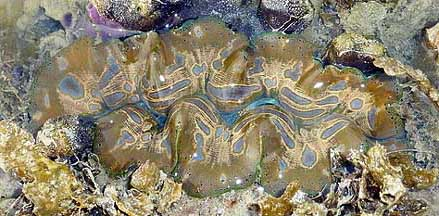
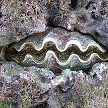
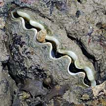
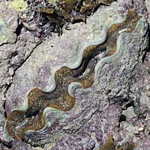

|
|
| bivalves text index | photo index |
| Phylum Mollusca > Class Bivalvia > Subfamily Tridacninae |
| Burrowing
giant clam Tridacna crocea Family Tridacnidae updated May 2020 Where seen? This large clam with wavy 'lips' is sometimes seen on our undisturbed Southern shores, tucked into coral rubble and even among living corals. But it is often overlooked. Features: At 10-15cm, it is the smallest of the giant clams. It is buried deep in living and dead coral or other hard surfaces in relatively shallow water near living reefs. It bores into the hard surface with a combination of chemical and mechanical methods that are still poorly understood. The two-part shell has shallow fluted sculpturing on the surface. When submerged, all that can often be seen are its thick 'lips' of fleshy tissue. These come in various colours and patterns, from those that camouflage against its surroundings to bright colours. Human uses: Giant clams are considered a delicacy and in some places, an aphrodisiac. The large shells of these magnificent creatures are often turned into tacky souvenirs like ash-trays. There are efforts to cultivate giant clams on a commercial basis so as to reduce over-collection of wild clams. Status and threats:Like other creatures of the intertidal zone, they are affected by human activities such as reclamation and pollution. Trampling by careless visitors and over-collection can also affect local populations of young clams. |
|
 Thick fleshy 'lips' when submerged. Terumbu Raya , May 10 Photo shared by Loh Kok Sheng on his blog. |
 Short fluted scuplturing on shell. Pulau Hantu, Mar 05 |
|
 Pulau Hantu, Feb 06 |
| Burrowing giant clams on Singapore shores |
On wildsingapore
flickr
|
| Other sightings on Singapore shores |
 Terumbu Pempang Darat, Jun 10 Photo shared by James Koh on his blog. |
 Terumbu Berkas, Jan 10 |
 Pulau Senang, Aug 10 |
|
Links
References
|